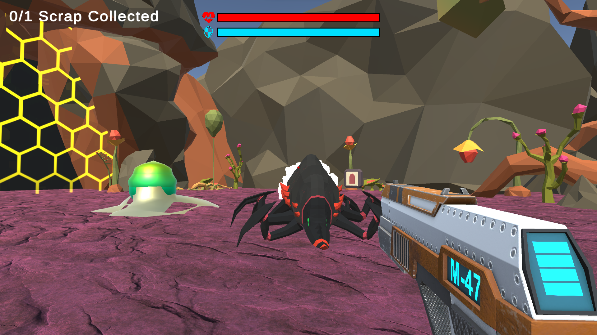

Scrapwreck
" Scrapwreck is a 3D First Person Shooter where your spaceship has crash landed on an alien planet and you must use the available resources that you find to repair while also fighting off hordes of alien enemies. "
Scrapwreck was 3D first-person shooter game made in Unity and C#. This was a midterm project made with a team of 3-4 people, including myself. It features player power-ups, 5 levels, 3 different enemy types (charging, ranged, and exploding), and a final boss.
Scrapwreck was made in roughly 2 months. A prototype for the game was made in the first month with 4 team members on top of learning how to develop in Unity. The second month was focused on bringing the prototype to a final game with only 3 members as our 4th was not available at the time.
I had mainly handled the enemy AI programming in this project, but I also made the first 3 levels for the Scrapwreck and helped with some of the menus.
The site that the game was originally hosted on unfortunately went down. Here is the game's public repository on GitHub instead.
